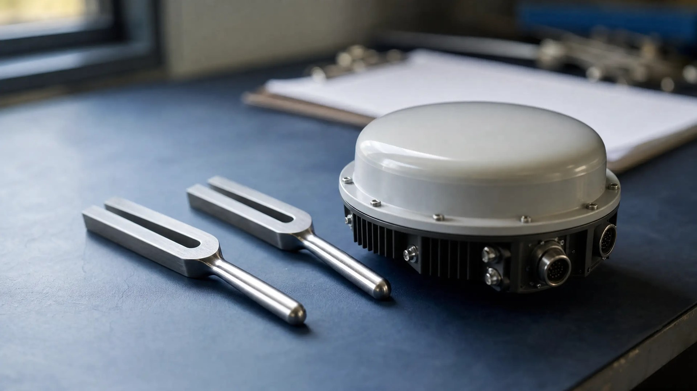

Florida Radar and Laser Tolerance: 1 MPH Rule

A Florida speeding citation rests on a machine's number, and that number is only as good as the radar and laser accuracy tolerance behind it. The radar and laser accuracy tolerance is a one mile per hour cap on error, proved through bench tests, shift checks, and operator training. Miss one piece and the reading may never come in.
Why does your ticket rest on a machine's number?
Radar reads the frequency shift of a microwave signal bounced off your car. Laser, or LIDAR, times light pulses instead. Florida treats both as "radar" for admissibility.
The officer must form a visual estimate first, then confirm it with the unit. Under F.S. 316.1906, the reading comes in only after that independent visual determination, the approved course, and an approved unit with audio Doppler engaged.
The citation still lists the machine's number, not the estimate. So the hearing turns on whether that number is admissible. When the foundation fails, the reading drops out, as in a dangerous excessive speeding case dismissed because the State could not prove speed.
Which rules set the radar and laser accuracy tolerance?
F.S. 316.1905 sets the frame. The device must be a type approved by the Florida Department of Highway Safety and Motor Vehicles (FLHSMV) and tested at least once every six months. A signed and witnessed certificate showing a timely test creates a presumption of accuracy.
The technical details live in Florida Administrative Code Chapter 15B-2, an FLHSMV rule administered through the Florida Highway Patrol. The Florida Department of Law Enforcement's role is limited to the training course.
The tolerance itself is one mile per hour. Radar tuning forks must be certified to plus or minus 1 mph. A laser unit's six-month speed test must land within plus or minus 1 mph, and its distance test within plus or minus 1 foot.
What about moving-mode radar?
The rule text publishes no separate mph tolerance for moving mode. Instead, the six-month bench test must check target speeds from 15 to 100 mph and patrol speeds from 15 to 70 mph. A certificate without the patrol-speed test leaves a moving-mode reading on incomplete proof.
What paper trail must exist for the day of your stop?
There are two layers of testing. A bench test happens at least every six months. Shift checks happen before enforcement and after the last enforcement action of the shift. Both must be logged, and a missing entry for your shift is a gap in the State's proof.
Radar results go on Form HSMV 61070 and laser results on Form HSMV 61071. Both are what you request in discovery.
What the State must show before a speed reading comes in
| Requirement | Radar (Doppler) | Laser (LIDAR) |
|---|---|---|
| Approved device | Model listed on the FLHSMV approved radar list under Rule 15B-2.013. | Model listed on the FLHSMV approved laser list under Rule Chapter 15B-2. |
| Shift checks (before enforcement and after the last stop) | Internal check plus an external test with tuning forks certified to plus or minus 1 mph, recorded in a written log. | Display check, internal accuracy check per the manufacturer, distance check on two fixed targets at least 100 feet apart accurate to plus or minus 1 foot, and sight alignment on a target at least 200 feet away, all logged. |
| Bench test at least every six months | Licensed radio technician tests frequency, target speeds 15 to 100 mph, patrol speeds 15 to 70 mph, and recertifies the forks. Recorded on Form HSMV 61070. | Registered engineer or certified technician tests wavelength, pulse, speed within plus or minus 1 mph, distance within plus or minus 1 foot, and alignment from 500 to 3,000 feet. Recorded on Form HSMV 61071. |
| Operator and missing records | Officer holds a CJSTC speed-measurement certificate and made a visual estimate first. If a record is missing, the reading can be excluded, but the visual estimate may still support the citation. | Officer holds a CJSTC speed-measurement certificate and made a visual estimate first. If a record is missing, the reading can be excluded, but the visual estimate may still support the citation. |
Orange County appellate panels have let the six-month certificate come in through the citing officer as a business record. The counter is that the officer cannot explain how the outside technician prepared it. That paper fight is how excluded evidence changed the outcome of a 103 mph case.
What training must the officer hold?
F.S. 943.17 authorizes the Criminal Justice Standards and Training Commission speed-measurement course, now 40 hours with at least 12 hours of hands-on practice. The officer must have completed it before the reading is admissible.
A lapsed certificate matters as much as a bad calibration. You can also require the officer who operated the device to appear and testify.
Knocking out the reading does not always end the case
Ninth Circuit appellate panels have upheld speeding findings on the officer's visual estimate alone after the device proof failed. One involved an estimate above 100 mph in a 55 zone. Those rulings are persuasive, not binding statewide. A bare "lack of foundation" objection is not enough. Name the exact missing predicate.
What can you request after electing a hearing?
F.S. 318.14 gives you 30 days from the citation to pay, elect driver improvement school, or elect a hearing. Paying closes the door. The device and training records are reachable only after you elect a hearing.
Records to request once a hearing is elected
- The most recent six-month bench certificate, Form HSMV 61070 or 61071
- The tuning-fork certificates used at the shift check
- The shift log showing checks before enforcement and after the last stop
- The officer's CJSTC speed-measurement certificate
In April 2026, ClickOrlando reported an Orange County jury acquittal in a dangerous excessive speeding case after the judge barred the radar and laser readings. The calibration records had not been properly introduced, leaving only the deputy's brief visual estimate.
Before your date, read what to expect at your first traffic court hearing in Florida so the objection is ready on time.
How a Criminal Defense Attorney Can Help
If you're facing radar or laser speeding citation charges in Orlando, an experienced defense attorney can pull the device records and frame the specific objection. As a former State Trooper and Deputy Sheriff, I understand how law enforcement builds these cases—and how to challenge them effectively.
The stakes rise under F.S. 316.1922, the dangerous excessive speeding law known as the Super Speeder law. Those cases are misdemeanors, so the same fight happens in county criminal court. The data on why hiring an attorney beats handling a traffic ticket yourself applies with more force when jail is possible.
This article is general information about Florida law, not legal advice for any specific case. Whether a missing record helps depends on your citation and what the officer saw.
Facing Radar or Laser Speeding Citation Charges?
If you received a speeding citation in Orange County and elected a hearing, a defense lawyer can review the bench certificates, shift logs, and training records behind the reading.
Contact Lotter Law at 407-500-7000 for a free consultation.

Jeff Lotter
Criminal Defense Attorney | Former State Trooper
Jeff Lotter is an Orlando criminal defense attorney and former Florida Highway Patrol trooper. He uses his law enforcement background to build stronger defenses for clients facing criminal charges.
Related Articles
Why Hiring an Attorney Beats Handling a Traffic Ticket Yourself – The Data Speaks
Data analysis shows why hiring an attorney leads to better outcomes for Florida traffic tickets. Explore our interactive dashboard to see th…
Richardson Hearing Victory: 103 MPH Super Speeder Reduced After Evidence Excluded
Client facing 103 mph super speeder charge got radar evidence excluded after successfully challenging officer testimony. Case reduced to civ…
Super Speeder Dismissed: Why the State Couldn't Prove Speed
Charged with driving 100+ mph super speeder offense in Florida? Learn about the mandatory criminal penalties and defense strategies to prote…
What to Expect at Your First Traffic Court Hearing in Florida
Nervous about your first traffic court appearance? Here's exactly what happens from check-in to verdict in Orange, Osceola, and Seminole Cou…